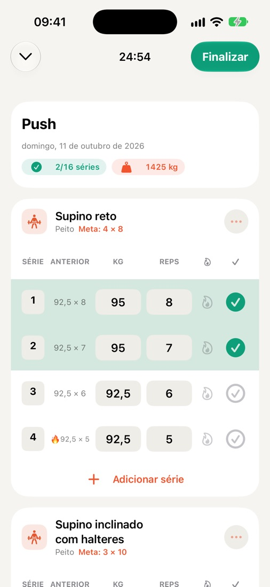
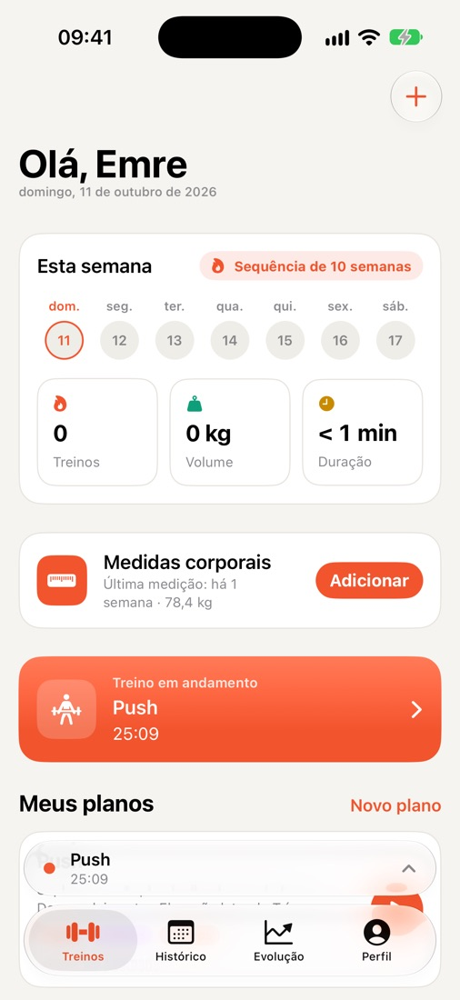
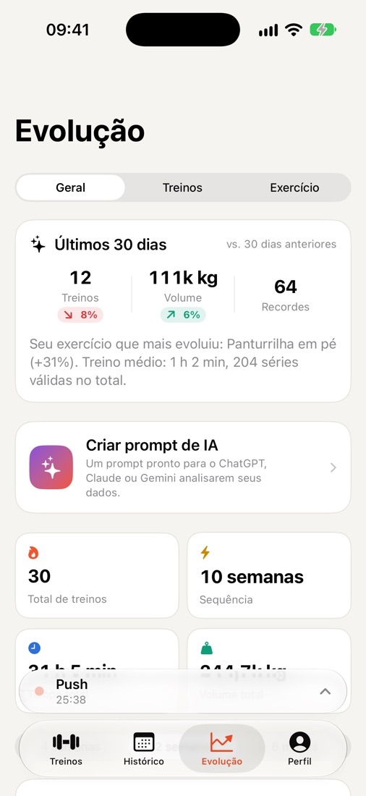
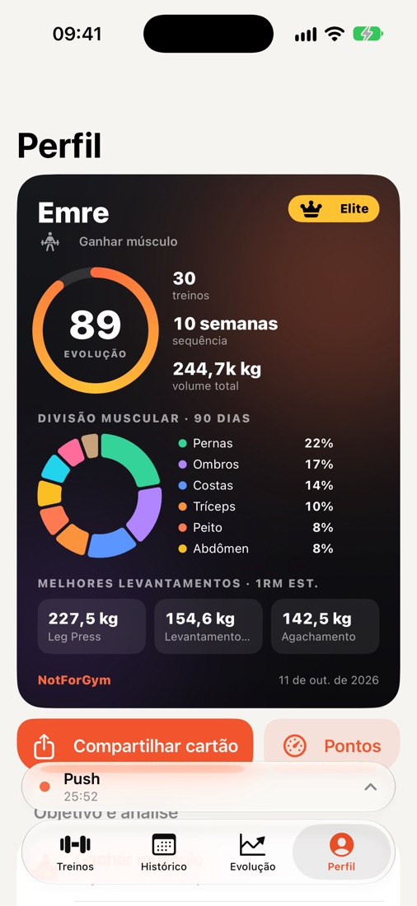
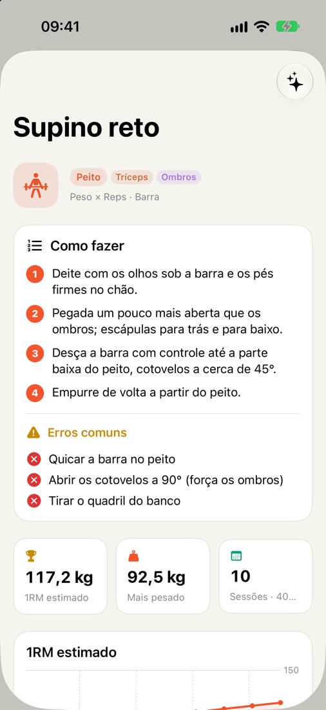
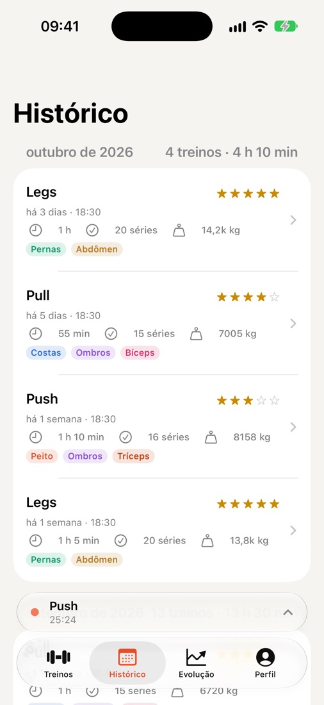

Registre cada série.
Veja cada evolução.
NotForGym é um registro de treinos rápido e sem enrolação para iPhone e Apple Watch. O treino anterior aparece ao lado de cada série, o cronômetro de descanso roda na Tela Bloqueada e sua evolução vira recordes e gráficos. Sem conta, sem cadastro.

Feito para o intervalo entre as séries
Tudo o que você precisa na academia, nada além disso.
Registro rápido de séries
Carga e repetições do último treino ao lado de cada série. Aquecimento, séries até a falha, notas e dificuldade com um toque.
Descanso e Atividade ao Vivo
A contagem do descanso fica na Tela Bloqueada e na Dynamic Island: conclua a série ou pule o descanso sem abrir o app.
Apple Watch
Veja a próxima série, marque como feita e sinta um toque no pulso quando o descanso acabar.
Evolução e recordes
Gráficos de volume semanal, 1RM estimado, recordes pessoais e uma divisão por grupo muscular que mostra o que você está deixando de lado.
Mais de 250 exercícios
Uma biblioteca completa com equipamentos e músculos trabalhados, além de guias passo a passo e erros comuns dos exercícios mais populares.
Medidas corporais
Acompanhe peso e medidas ao longo do tempo, com um lembrete semanal se quiser.
Saúde da Apple
Os treinos concluídos podem ser salvos no app Saúde e contam para os seus anéis de Atividade.
Sincronização com iCloud
Seus dados são sincronizados pelo seu próprio iCloud privado e voltam quando você reinstala o app ou troca de iPhone.
Cartão de atleta e widget
Um cartão para compartilhar com sua pontuação de evolução, sequência e melhores cargas; também como widget da Tela de Início e da Tela Bloqueada.
Resumo pronto para IA
Crie um prompt com seus dados de treino e cole no assistente de IA que você já usa.
Importar e exportar CSV
Seus dados são seus. Exporte tudo como planilha quando quiser, ou importe de volta.
8 idiomas
English, Türkçe, Deutsch, Español, Português (Brasil), Français, Italiano e 日本語.
Veja de perto





Grátis. Todos os recursos.
- Nunca há anúncios durante o treino
- Remova os anúncios com uma compra e restaure em qualquer dispositivo
- Sem conta, sem assinatura
Seu treino é só seu.
- Sem cadastro, sem e-mail
- Dados de saúde nunca são usados para anúncios
- Apague tudo com um botão
Dúvidas?
Veja as perguntas frequentes ou escreva para nós: lemos todas as mensagens.
Falar com o suporte